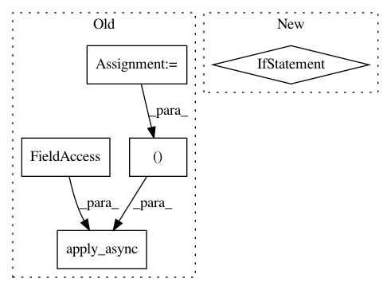

29ab5e1965503be3ffe87462e973edf1d457af6e,codes/scripts/extract_subimgs_single.py,,main,#,9
Before Change
def chunkify(lst, n): // for non-continuous chunks
return [lst[i::n] for i in range(n)]
sub_lists = chunkify(all_files, n_thread)
// call workers
for i in range(n_thread):
p.apply_async(worker, args=(sub_lists[i], save_GT_dir))
print("Waiting for all subprocesses done...")
p.close()
p.join()
end = time.time()
After Change
// CV_IMWRITE_PNG_COMPRESSION from 0 to 9. A higher value means a smaller size and longer
// compression time. If read raw images during training, use 0 for faster IO speed.
if not os.path.exists(save_folder):
os.makedirs(save_folder)
print("mkdir [{:s}] ...".format(save_folder))
else:
print("Folder [{:s}] already exists. Exit...".format(save_folder))
sys.exit(1)
img_list = []
for root, _, file_list in sorted(os.walk(input_folder)):
path = [os.path.join(root, x) for x in file_list] // assume only images in the input_folder
img_list.extend(path)
In pattern: SUPERPATTERN
Frequency: 3
Non-data size: 5
Instances
Project Name: xinntao/BasicSR
Commit Name: 29ab5e1965503be3ffe87462e973edf1d457af6e
Time: 2018-09-06
Author: wxt1994@126.com
File Name: codes/scripts/extract_subimgs_single.py
Class Name:
Method Name: main
Project Name: deepchem/deepchem
Commit Name: 3b3a06ad8402079c2d18718349d5f0f212ac7b81
Time: 2020-12-11
Author: nfrey213@gmail.com
File Name: deepchem/feat/base_classes.py
Class Name: ComplexFeaturizer
Method Name: featurize
Project Name: etal/cnvkit
Commit Name: ce579cf021ca1ee0705bd9484aae55e0d110d0e7
Time: 2016-09-08
Author: eric.talevich@gmail.com
File Name: cnvlib/commands.py
Class Name:
Method Name: batch_make_reference